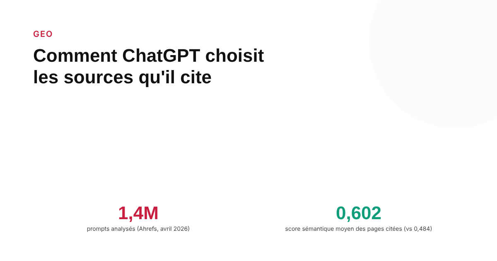
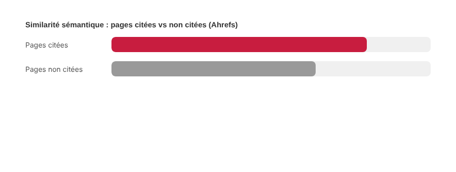

Comment ChatGPT choisit les sources qu'il cite : ce que les études montrent
Apparaître dans les résultats que ChatGPT consulte ne garantit pas d'être cité dans sa réponse. Une étude Ahrefs sur 1,4 million de prompts, publiée en avril 2026, isole ce qui distingue une page retenue d'une page écartée.

Quand ChatGPT effectue une recherche web pour répondre à une question, deux décisions distinctes se jouent l'une après l'autre : quelles pages consulter, puis lesquelles citer réellement dans la réponse. La confusion entre ces deux étapes explique une bonne partie des idées fausses qui circulent sur le GEO. Une étude d'Ahrefs publiée en avril 2026, portant sur l'analyse de 1,4 million de prompts, est à ce jour la tentative la plus large pour documenter empiriquement ce qui se passe entre les deux.
Récupérer une page n'est pas la citer
Le chiffre le plus cité de l'étude Ahrefs résume bien le problème : environ une page sur deux parmi celles que ChatGPT récupère lors d'une recherche web finit réellement citée dans la réponse donnée à l'utilisateur. Apparaître dans les résultats que le modèle consulte en coulisses — ce qu'on peut suivre via les logs serveur — ne dit donc presque rien sur la probabilité d'être effectivement mentionné. C'est la distinction la plus importante à retenir avant de tirer des conclusions sur sa propre visibilité GEO à partir des seuls logs de crawl.
Ce qui corrèle avec la citation, selon l'étude
L'étude met en évidence un lien entre la citation et la proximité sémantique entre le contenu de la page et le prompt : les pages citées obtiennent un score de similarité sémantique moyen de 0,602 avec la requête d'origine, contre 0,484 pour les pages non citées. Elle observe aussi que les pages dont l'URL contient un slug clair et descriptif sont citées plus souvent que celles dont l'URL est peu lisible. Ahrefs avance une explication plausible : avant d'ouvrir une page, le modèle semble évaluer chaque résultat à partir de son titre, de son extrait et de son URL — une page dont ces trois éléments collent précisément à l'intention de la requête aurait plus de chances d'être retenue.

Le cas Reddit, révélateur du mécanisme
L'étude isole un cas particulièrement parlant : Reddit, malgré une présence très fréquente parmi les pages récupérées par ChatGPT, n'est cité qu'à hauteur de 1,93 % — un taux nettement plus bas que celui des pages de sites davantage structurés comme des sources de référence. Ce chiffre a d'ailleurs été repris et discuté dans la presse spécialisée. L'écart illustre bien que la popularité d'une source dans les retrievals ne se traduit pas automatiquement en citations : un forum peut être consulté massivement sans être jugé citable par le modèle, probablement parce que le format de la discussion s'aligne mal avec le type de réponse synthétique que ChatGPT cherche à produire.
Les limites à garder en tête
Cette étude reste la plus large connue sur le sujet, mais elle a des limites qu'il faut signaler honnêtement : elle est menée par un acteur commercial du secteur SEO, elle est observationnelle (elle documente des corrélations, pas des mécanismes internes prouvés), et sa méthodologie — notamment le fait de travailler sur un jeu de prompts construit par Ahrefs plutôt que sur des requêtes réelles d'utilisateurs — a été critiquée publiquement par certains observateurs. Le comportement des modèles change aussi à chaque mise à jour, ce qui rend toute conclusion datée par nature. Ces chiffres sont des indices solides sur une tendance, pas des règles d'optimisation garanties.
Ce qu'on peut raisonnablement en tirer
Deux leviers ressortent avec un degré de confiance correct : écrire des titres et des URLs qui reflètent précisément l'intention de recherche visée, plutôt que des formulations génériques, et structurer le contenu pour qu'il réponde directement et clairement à la sous-question qu'un modèle cherche à combler — pas seulement au sujet général de la page. Le reste (fréquence de publication, longueur, format) n'a pas de corrélation démontrée dans cette étude et ne devrait pas être traité comme un facteur confirmé.
FAQ
ChatGPT cite-t-il toutes les pages qu'il consulte lors d'une recherche web ?
Non. Selon l'étude Ahrefs portant sur 1,4 million de prompts (avril 2026), environ une page sur deux parmi celles que ChatGPT récupère lors d'une recherche web finit par être citée dans la réponse. La récupération et la citation sont deux étapes distinctes.
Pourquoi Reddit est-il peu cité par ChatGPT malgré sa popularité ?
L'étude Ahrefs mesure un taux de citation de seulement 1,93 % pour Reddit, malgré une présence fréquente dans les pages récupérées. L'écart suggère que la fréquence de récupération et la probabilité de citation réelle obéissent à des logiques différentes, propres à chaque type de source.
Faut-il se fier à une seule étude pour optimiser son contenu pour ChatGPT ?
Non. L'étude Ahrefs est observationnelle, menée par un acteur du secteur SEO, et sa méthodologie a été discutée publiquement. Ses résultats donnent des tendances utiles, pas des règles garanties — d'autant que le comportement des modèles évolue à chaque mise à jour.
Envie de savoir où vous en êtes sur votre visibilité dans les réponses IA ?
Pour aller plus loin, voir la page GEO, et l'article Comment auditer sa visibilité dans ChatGPT et Perplexity.
Pour continuer sur ce sujet.